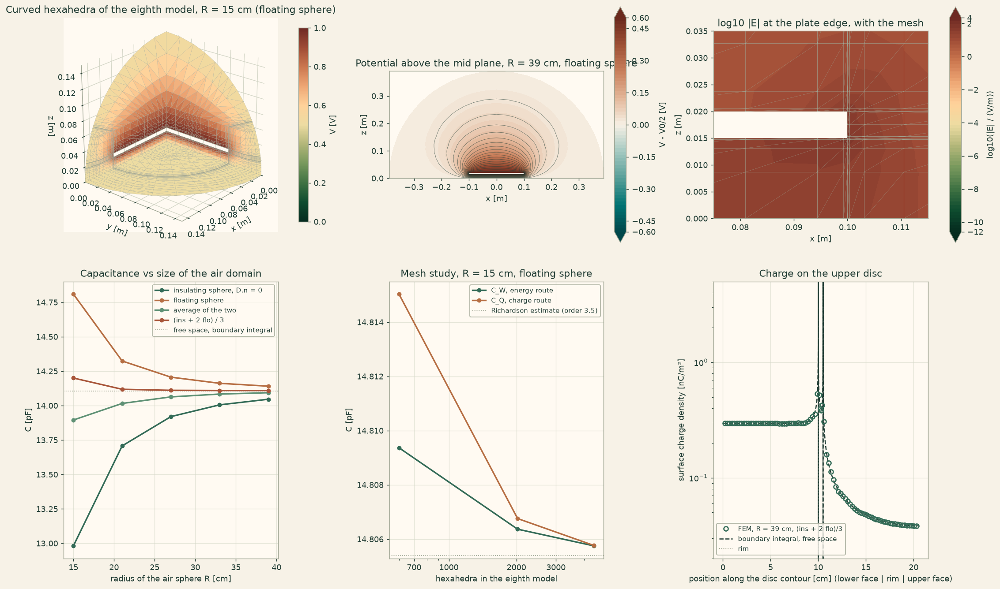

Docs › Examples › Fringing fields of a thick-plate capacitor
Electrostatics · 3D
Fringing fields of a thick-plate capacitor
Two thick metal discs in a spherical air domain: how the fringing field raises the capacitance and how the size of the air domain biases the result.

What it computes
OneSimulation solves the 3D electrostatic potential with isoparametric quadratic elements on curved 27-node hexahedra (an O-grid graded towards the plate edges), sweeps the air-sphere radius with insulating and floating outer boundaries, and takes the capacitance from field energy and from Green's-identity charge.
What it checks
The domain-corrected capacitance agrees with an independent boundary-integral solution to 1e-5, energy and charge routes agree to 1e-6 on the finest mesh, and the domain error follows the predicted dipole-image law.
The notebook
The complete notebook, cell by cell. Run it to produce the figures and the comparison printout.
A parallel-plate capacitor of two metal discs (radius \(a=10\) cm, thickness \(t=5\) mm, gap \(d=3\) cm) stands in air. The upper disc is held at \(V_0=1\) V, the lower one is grounded. The electric field is not confined to the gap: it bulges out at the plate edges (fringing) and reaches around to the outer faces of the discs, which therefore carry charge as well. The capacitance is far larger than the ideal plate value \(\varepsilon_0\pi a^2/d=9.27\) pF.
A computer model has to cut the unbounded air off somewhere. Here the air is a sphere of radius \(R\) around the capacitor, and two conditions on its surface are compared:
- insulating surface, \(\mathbf D\cdot\mathbf n=0\): field lines are forced to stay inside, which lowers the capacitance (the stored energy is minimised over a smaller space);
- floating conductor, an equipotential surface without net charge: field lines end on it, which raises the capacitance (an added conductor can only increase it). By the antisymmetry of the arrangement the floating sphere takes the mid potential \(V_0/2\).
Both values approach the free-space capacitance as \(R\) grows. For a sphere much larger than the capacitor, its far field is that of a dipole, and the image of a dipole in a sphere gives the error of the insulating surface twice the size of the error of the conducting one, \(C_\mathrm{ins}\approx C_\infty-2k/R^3\) and \(C_\mathrm{flo}\approx C_\infty+k/R^3\), so \((C_\mathrm{ins}+2C_\mathrm{flo})/3\) removes the leading domain error. The study sweeps \(R=15,21,27,33,39\) cm.
Numerical method. Spatial: continuous Galerkin finite elements, second-order Lagrange (Q2, 27 nodes) on curved 27-node hexahedra - an isoparametric discretisation in which the spherical surface and the circular plate edges are represented by quadratic geometry, not by facets. The hexahedral mesh is built block by block (an O-grid around the axis, layers graded towards the singular plate edges, and radial layers out to the sphere). Time integration: none, the problem is stationary. Solver: sparse direct LU. The capacitance is evaluated twice,
where \(\chi\) is a smooth weight equal to one on the upper plate and zero on the mid plane and on the sphere; for the exact field \(Q\) is the plate charge for every such \(\chi\) (Green's identity), so \(C_Q\) is an independent route through the field.
Reference. The free-space capacitance of exactly these thick discs is computed in the notebook from the axisymmetric boundary-integral equation for the surface charge,
on the generating contour \(\Gamma\) of one disc (bottom face, rim, top face), with the mirrored disc built into the kernel (J. D. Jackson, Classical Electrodynamics, 3rd ed., Sec. 3.3, for the ring potential; the integral-equation method for disc capacitors goes back to E. R. Love, Q. J. Mech. Appl. Math. 2, 428, 1949). It is solved by panel collocation on a graded contour and converges to seven digits. As a check of the boundary-integral code, its zero-thickness version is compared with Love's integral equation, and Kirchhoff's closed-form fringing formula for thin discs (G. Kirchhoff, Monatsber. Akad. Wiss. Berlin 1877, 144),
shows how large the fringing contribution is. Kirchhoff's formula keeps only the leading terms of an expansion in \(d/a\) and ignores the plate thickness, so at \(d/a=0.3\) it is a few per cent low.
import time
import numpy as np
from scipy.special import ellipk
from onesim.materials import VacuumPermittivity
from onesim.meshing import ExplicitGeometry, VolumeBlock, merge_volume_blocks, region_mesh
from onesim.numerics import Numerics
from onesim.numerics.fem import FiniteElement, Lagrange
from onesim.numerics.linear import SparseDirect
from onesim.physics.electrostatics import FixedPotential, PoissonEquation, ZeroNormalElectricDisplacement
from onesim.results.comparisons import convergence
from onesim.results.derived import derived_field
from onesim.simulation import Problem, Simulation
from onesim.visualization import theme, plots
theme.set()Parameters
a = 0.10
t = 0.005
d = 0.03
g = d / 2
V0 = 1.0
radii = (0.15, 0.21, 0.27, 0.33, 0.39)
eps0 = float(VacuumPermittivity().evaluate())
C_ideal = eps0 * np.pi * a**2 / d
C_kirchhoff = C_ideal + eps0 * a * (np.log(16 * np.pi * a / d) - 1)
print(f"ideal plates eps0 pi a^2 / d = {1e12*C_ideal:.4f} pF; Kirchhoff (thin discs) = {1e12*C_kirchhoff:.4f} pF")Reference: boundary-integral solution in free space
Piecewise-constant surface charge on panels along the contour of the upper disc, collocation at the panel midpoints, Gauss-Legendre quadrature for distant panels, composite Gauss-Legendre for the neighbours and a cubic substitution that removes the logarithmic singularity of the elliptic integral on the panel itself. The panels are graded like \((i/n)^3\) towards the two plate edges, where the charge density is singular.
def ring_potential(r, z, rp, zp):
s2 = (r + rp) ** 2 + (z - zp) ** 2
return 4 * ellipk(np.minimum(4 * r * rp / s2, 1 - 1e-16)) / np.sqrt(s2)
def kernel(r, z, rp, zp):
"""Potential (times 4 pi eps0) of unit surface charge per unit contour length: disc plus mirror disc."""
return rp * (ring_potential(r, z, rp, zp) - ring_potential(r, z, rp, -zp))
def disc_contour(n, thickness):
s = np.linspace(0, 1, n + 1)
r_face = a * (1 - (1 - s) ** 3)
if thickness == 0:
points = np.column_stack((r_face, np.full(n + 1, g)))
else:
m = max(2, int(round(4 * n * thickness / a)))
h = np.linspace(0, 1, m + 1) ** 3 * thickness / 2
rim = np.r_[h, thickness - h[::-1][1:]]
points = np.array([(r, g) for r in r_face] + [(a, g + z) for z in rim[1:]]
+ [(r, g + thickness) for r in r_face[::-1][1:]])
return points[:-1], points[1:]
def bem_capacitance(n, thickness=t, n_gauss=10):
P0, P1 = disc_contour(n, thickness)
mid, length = 0.5 * (P0 + P1), np.linalg.norm(P1 - P0, axis=1)
x, w = np.polynomial.legendre.leggauss(n_gauss)
x, w = (x + 1) / 2, w / 2
Qp = P0[:, None, :] + x[None, :, None] * (P1 - P0)[:, None, :]
Wp = w[None, :] * length[:, None]
A = np.array([np.sum(Wp * kernel(mid[i, 0], mid[i, 1], Qp[..., 0], Qp[..., 1]), axis=1)
for i in range(len(length))])
gs, gw = np.polynomial.legendre.leggauss(16)
gs, gw = (gs + 1) / 2, gw / 2
u_self, w_self = np.r_[0.5 - 0.5 * gs**3, 0.5 + 0.5 * gs**3], np.r_[1.5 * gs**2 * gw, 1.5 * gs**2 * gw]
u_near, w_near = ((np.arange(8)[:, None] + gs) / 8).ravel(), np.tile(gw / 8, 8)
for i in range(len(length)):
near = np.where(np.linalg.norm(mid - mid[i], axis=1) < 2.5 * np.maximum(length, length[i]))[0]
for j in near:
u, w = (u_self, w_self) if i == j else (u_near, w_near)
p = P0[j] + u[:, None] * (P1[j] - P0[j])
A[i, j] = np.sum(w * kernel(mid[i, 0], mid[i, 1], p[:, 0], p[:, 1])) * length[j]
sigma = np.linalg.solve(A, np.full(len(length), 4 * np.pi * eps0 * V0 / 2))
charge = 2 * np.pi * np.sum(sigma * np.sum(Wp * Qp[..., 0], axis=1))
return charge / V0, dict(mid=mid, length=length, sigma=sigma)
def love_capacitance(n=800):
kappa = d / a
x, w = np.polynomial.legendre.leggauss(n)
kern = kappa / np.pi / (kappa**2 + (x[:, None] - x[None, :]) ** 2)
f = np.linalg.solve(np.eye(n) - kern * w[None, :], np.ones(n))
return 2 * eps0 * a * np.sum(w * f)
start = time.perf_counter()
bem_levels = (160, 320, 640)
bem = [bem_capacitance(n) for n in bem_levels]
C_bem, bem_charge = bem[-1][0], bem[-1][1]
C_thin = bem_capacitance(640, thickness=0.0)[0]
C_love = love_capacitance()
print(f"boundary-integral solution, thick discs ({time.perf_counter()-start:.0f} s):")
for n, (C, data) in zip(bem_levels, bem):
print(f" {len(data['length']):4d} panels: C = {1e12*C:.7f} pF")
print(f" reference C_inf = {1e12*C_bem:.6f} pF (change between the last two contours {abs(bem[2][0]/bem[1][0]-1):.1e})")
print(f"check of the method, zero-thickness discs: {1e12*C_thin:.5f} pF vs Love's equation {1e12*C_love:.5f} pF "
f"({C_thin/C_love-1:+.1e})")
print(f"the 5 mm plate thickness adds {1e12*(C_bem-C_love):.3f} pF ({100*(C_bem/C_love-1):.1f} %) to the thin-disc value")Geometry and mesh
The arrangement is rotationally symmetric and antisymmetric about the mid plane \(z=0\) (which is therefore an equipotential at \(V_0/2\)). One eighth of the sphere (\(x\ge0\), \(y\ge0\), \(z\ge0\)) is meshed; the conductor itself is not part of the domain, its surface is a boundary.
The mesh consists of curved 27-node hexahedra built from three kinds of blocks:
- an O-grid in the horizontal plane: a central square, two transition blocks to a circle of radius 5.5 cm, and polar rings out to 12.5 cm - so there are no degenerate cells on the axis and the plate edge \(r=a\) is a circle of nodes;
- layers in \(z\) that resolve the gap, the plate and the space above it; radial rings and layers are graded like \((i/n)^3\) towards the two singular plate edges, where the field behaves like \(\rho^{-1/3}\);
- radial layers from the surface of this inner cylinder (\(r=12.5\) cm, \(z=5\) cm) out to the sphere, along rays from the centre and with geometric growth, so the element size stays fixed when the sphere grows, as in the original study.
Every node, including the mid-edge, mid-face and centre nodes, is placed by the exact block mappings, so the sphere and the plate edges are represented with quadratic accuracy. Boundary groups: terminal (all faces of the upper disc), midplane (\(z=0\)), symmetry (\(x=0\) and \(y=0\)) and outer (the sphere).
R_INNER, H_INNER = 0.125, 0.05
CORE, RING = 0.03, 0.055
def boundary_name(point, normal):
x, y, z = point
if abs(x) < 1e-9:
return "symmetry_x"
if abs(y) < 1e-9:
return "symmetry_y"
if abs(z) < 1e-9:
return "midplane"
if np.hypot(x, y) < a + 1e-6 and g - 1e-6 < z < g + t + 1e-6:
return "terminal"
return "outer"
capacitor = ExplicitGeometry(dimension=3, boundary_names=("outer", "symmetry_x", "symmetry_y", "midplane", "terminal"),
groups={"symmetry": ("symmetry_x", "symmetry_y")}, classifier=boundary_name)
def power_graded(x0, x1, n, fine_at):
"""n intervals on [x0, x1], sizes growing like (i/n)^3 away from the fine end."""
s = np.linspace(0, 1, n + 1) ** 3
return x0 + (x1 - x0) * (s if fine_at == "start" else 1 - s[::-1])
def outside_disc(centres):
r = np.hypot(centres[:, 0], centres[:, 1])
return ~((r < a) & (centres[:, 2] > g) & (centres[:, 2] < g + t))
def build_mesh(R, m):
"""Eighth-sphere mesh of the capacitor; m sets the density (cells per unit block edge)."""
quarter = np.pi / 2
radial = np.r_[power_graded(RING, a, 2 * m, "end"), power_graded(a, R_INNER, 2 * m, "start")[1:]]
heights = np.r_[power_graded(0, g, 2 * m, "end"), power_graded(g, g + t / 2, m, "start")[1:],
power_graded(g + t / 2, g + t, m, "end")[1:], power_graded(g + t, H_INNER, 2 * m, "start")[1:]]
core = lambda u, v: (CORE * u, CORE * v)
lower = lambda u, v: ((1 - u) * CORE + u * RING * np.cos(v * quarter / 2),
(1 - u) * CORE * v + u * RING * np.sin(v * quarter / 2))
upper = lambda u, v: ((1 - u) * CORE * v + u * RING * np.sin(v * quarter / 2),
(1 - u) * CORE + u * RING * np.cos(v * quarter / 2))
polar = lambda u, v: (u * np.cos(v), u * np.sin(v))
unit = np.linspace(0, 1, m + 1)
planes = ((core, unit, unit), (lower, unit, unit), (upper, unit, unit),
(polar, radial, np.linspace(0, quarter, 2 * m + 1)))
blocks = [VolumeBlock(lambda u, v, w, plane=plane: (*plane(u, v), w), us, vs, heights) for plane, us, vs in planes]
h_first = radial[-1] - radial[-2]
growth = 1.35
layers = int(np.ceil(np.log(1 + (R - R_INNER) * (growth - 1) / h_first) / np.log(growth)))
sizes = growth ** np.arange(layers)
fractions = np.r_[0, np.cumsum(sizes)] / sizes.sum()
def ray(base):
def mapping(u, v, w):
b = base(u, v)
length = np.sqrt(sum(c**2 for c in b))
return tuple(c + w * (R * c / length - c) for c in b)
return mapping
for plane, us, vs in planes:
blocks.append(VolumeBlock(ray(lambda u, v, plane=plane: (*plane(u, v), np.full_like(u, H_INNER))),
us, vs, fractions))
blocks.append(VolumeBlock(ray(lambda u, v: (R_INNER * np.cos(u), R_INNER * np.sin(u), v)),
np.linspace(0, quarter, 2 * m + 1), heights, fractions))
return region_mesh(merge_volume_blocks(blocks, capacitor, order=2), outside_disc, geometry=capacitor)Model
Boundary conditions on every face of the eighth model:
| face | condition | |---|---| | surface of the upper disc (terminal) | \(V=V_0\) | | mid plane \(z=0\) | \(V=V_0/2\) (antisymmetry; the lower, grounded disc is its mirror image) | | cut planes \(x=0\), \(y=0\) | symmetry, \(\mathbf D\cdot\mathbf n=0\) | | air sphere, insulating study | \(\mathbf D\cdot\mathbf n=0\) | | air sphere, floating-conductor study | \(V=V_0/2\) (the floating potential, fixed by antisymmetry) |
The energies and charges of the eighth are multiplied by 8 and 4 (the upper disc is a quarter of the meshed charge), respectively.
def smoothstep(s):
"""C2 step from 0 to 1 on [0, 1] and its derivative (both derivatives vanish at the ends)."""
s = np.clip(s, 0.0, 1.0)
return s**3 * (10 - 15 * s + 6 * s**2), 30 * s**2 * (1 - s) ** 2
def weight_gradient(points):
"""Gradient of chi = A(z) B(r) C(z): one on the upper disc, zero on z = 0 and on every sphere surface.
Its ramps run between node layers of the inner cylinder (0 < z < g, a < r < 12.5 cm,
g + t < z < 5 cm), so that the quadrature integrates it accurately.
"""
r = np.hypot(points[:, 0], points[:, 1])
A, dA = smoothstep(points[:, 2] / g)
B, dB = smoothstep((r - a) / (R_INNER - a))
Cz, dCz = smoothstep((points[:, 2] - g - t) / (H_INNER - g - t))
B, dB, Cz, dCz = 1 - B, -dB / (R_INNER - a), 1 - Cz, -dCz / (H_INNER - g - t)
grad = np.zeros_like(points)
radial = A * dB * Cz / np.maximum(r, 1e-12)
grad[:, 0], grad[:, 1] = radial * points[:, 0], radial * points[:, 1]
grad[:, 2] = dA / g * B * Cz + A * B * dCz
return grad
def capacitance_from_field(E):
"""C_W from the field energy and C_Q from the weighted charge integral (whole capacitor)."""
energy_density = derived_field(E, lambda e, p: np.sum(e**2, axis=1), name="E_squared", unit="V^2/m^2")
energy = 8 * 0.5 * eps0 * float(energy_density.integrate().value)
weighted = derived_field(E, lambda e, p: -np.sum(e * weight_gradient(p), axis=1), name="charge_weight",
unit="V/m^2")
charge = 4 * eps0 * float(weighted.integrate().value)
return 2 * energy / V0**2, charge / V0
def solve(R, m, outer):
start = time.perf_counter()
mesh = build_mesh(R, m)
geometry = mesh.geometry
model = PoissonEquation(domain=geometry.volume, permittivity=VacuumPermittivity(), charge_density=0.0)
sphere = (ZeroNormalElectricDisplacement(boundary=geometry.boundaries.outer, physics=model)
if outer == "insulating" else
FixedPotential(boundary=geometry.boundaries.outer, physics=model, value=V0 / 2))
problem = Problem(
name="Disc capacitor in an air sphere", geometry=geometry, physics=(model,),
boundary_conditions=(
FixedPotential(boundary=geometry.boundaries.terminal, physics=model, value=V0),
FixedPotential(boundary=geometry.boundaries.midplane, physics=model, value=V0 / 2),
ZeroNormalElectricDisplacement(boundary=geometry.boundaries.symmetry, physics=model),
sphere,
),
)
result = Simulation(problem=problem, mesh=mesh, numerics=Numerics(
spatial=FiniteElement(element=Lagrange(order=2)), linear_solver=SparseDirect())).solve_stationary()
potential, field = result.field(model.potential), result.field(model.electric_field)
C_W, C_Q = capacitance_from_field(field)
print(f"R = {100*R:2.0f} cm, {outer:10s} sphere, m = {m}: {mesh.cell_count:5d} hexahedra, "
f"{len(mesh.coordinates):6d} nodes, C_W = {1e12*C_W:.5f} pF, {time.perf_counter()-start:4.0f} s")
return dict(R=R, m=m, outer=outer, C_W=C_W, C_Q=C_Q, cells=mesh.cell_count, mesh=mesh,
potential=potential, field=field)Solve
Air-domain study: five sphere radii, each with the insulating and the floating outer surface, on meshes with the same element size (density m = 2).
Mesh study: the smallest sphere with the floating surface on three meshes (m = 2, 3, 4). The inner mesh around the plates, where the discretisation error arises, is the same for every sphere, so this study measures the discretisation error of the whole sweep.
sweep = {(R, outer): solve(R, 2, outer) for R in radii for outer in ("insulating", "floating")}
mesh_study = [sweep[(radii[0], "floating")], solve(radii[0], 3, "floating"), solve(radii[0], 4, "floating")]Comparison with the reference
Mesh convergence. For a Dirichlet problem the finite-element energy can only lie above the exact one, so the capacitance converges from above. With \(h\propto1/m\), convergence gives the observed order \(p\) and the Richardson estimate.
f = np.array([run["C_W"] for run in mesh_study])
h = 1.0 / np.array([run["m"] for run in mesh_study], float)
estimate = convergence(f, h)
order, C_rich = estimate.order, estimate.extrapolated
error_sweep = f[0] - C_rich
print("mesh study, R = 15 cm, floating sphere:")
for run in mesh_study:
print(f" m = {run['m']}: {run['cells']:5d} hexahedra C_W = {1e12*run['C_W']:.6f} pF C_Q = {1e12*run['C_Q']:.6f} pF")
print(f" change between the last two meshes {abs(f[2]/f[1]-1):.1e}; observed order {order:.2f}; "
f"Richardson estimate {1e12*C_rich:.6f} pF")
print(f" discretisation error of the sweep meshes (m = 2): {1e12*error_sweep:+.5f} pF ({error_sweep/C_rich:+.1e})")Energy and charge routes.
print("\n R [cm] outer surface C_W energy [pF] C_Q charge [pF] C_Q/C_W - 1")
for (R, outer), run in sweep.items():
print(f" {100*R:2.0f} {outer:10s} {1e12*run['C_W']:13.5f} {1e12*run['C_Q']:13.5f} {run['C_Q']/run['C_W']-1:+.1e}")Air-domain study against the free-space reference. The original study averages the two outer conditions; the dipole-image weighting \((C_\mathrm{ins}+2C_\mathrm{flo})/3\) removes the leading \(R^{-3}\) error, and subtracting the discretisation error from the mesh study (measured with the floating sphere and taken as the same for both outer conditions, since it arises at the plate edges) leaves the remaining domain error. The domain errors times \(R^3\) show the predicted ratio of two between the insulating and the floating sphere.
print(f"\nfree-space reference (boundary integral): {1e12*C_bem:.5f} pF")
print(" R [cm] insulating floating (ins+flo)/2 dev (ins+2flo)/3 dev minus mesh error dev")
for R in radii:
ins, flo = sweep[(R, "insulating")]["C_W"], sweep[(R, "floating")]["C_W"]
average, weighted = (ins + flo) / 2, (ins + 2 * flo) / 3
print(f" {100*R:2.0f} {1e12*ins:10.4f} {1e12*flo:9.4f} {1e12*average:10.4f} {average/C_bem-1:+.1e}"
f" {1e12*weighted:11.5f} {weighted/C_bem-1:+.1e} {1e12*(weighted-error_sweep):14.5f} {(weighted-error_sweep)/C_bem-1:+.1e}")
k_ins = [(C_bem - sweep[(R, "insulating")]["C_W"] + error_sweep) * R**3 for R in radii]
k_flo = [(sweep[(R, "floating")]["C_W"] - error_sweep - C_bem) * R**3 for R in radii]
print("domain error times R^3 [pF m^3], insulating / floating (ratio): "
+ ", ".join(f"{1e12*ki:.4f}/{1e12*kf:.4f} ({ki/kf:.2f})" for ki, kf in zip(k_ins, k_flo)))
print(f"\nideal plate formula: {1e12*C_ideal:.4f} pF ({C_ideal/C_bem-1:+.1%}); Kirchhoff's thin-disc formula: "
f"{1e12*C_kirchhoff:.4f} pF ({C_kirchhoff/C_bem-1:+.1%}); Love, thin discs: {1e12*C_love:.4f} pF ({C_love/C_bem-1:+.1%})")Figure
Top: the curved hexahedral mesh of the eighth model for R = 15 cm, coloured by the potential, the potential in the section through the axis for the whole sphere (\(R=39\) cm, floating surface; the computed eighth mirrored), and the field strength at the plate edge with the graded mesh. Bottom: capacitance against the sphere radius, the mesh study, and the surface charge density on the upper disc from the finite elements and from the boundary-integral solution.
final, small = sweep[(radii[-1], "floating")], sweep[(radii[0], "floating")]
b_small, b_big = small["mesh"].geometry.boundaries, final["mesh"].geometry.boundaries
R_cm = 100 * np.array(radii)
insulating = np.array([sweep[(R, "insulating")]["C_W"] for R in radii]) * 1e12
floating = np.array([sweep[(R, "floating")]["C_W"] for R in radii]) * 1e12
cells = [run["cells"] for run in mesh_study]
arc = np.r_[0, np.cumsum(bem_charge["length"])][:-1] + bem_charge["length"] / 2
s_probe = np.r_[np.linspace(0.002, a - 0.001, 40), np.linspace(a + 0.001, a + t - 0.001, 4),
np.linspace(a + t + 0.001, 2 * a + t - 0.002, 40)]
offset = 2e-5
r_probe = np.where(s_probe < a, s_probe, np.where(s_probe <= a + t, a + offset, 2 * a + t - s_probe))
z_probe = np.where(s_probe < a, g - offset, np.where(s_probe <= a + t, g + s_probe - a, g + t + offset))
normal = np.where((s_probe < a)[:, None], [0.0, -1.0], np.where((s_probe <= a + t)[:, None], [1.0, 0.0], [0.0, 1.0]))
probe_points = np.column_stack((r_probe / np.sqrt(2), r_probe / np.sqrt(2), z_probe))
normal3 = np.column_stack((normal[:, 0] / np.sqrt(2), normal[:, 0] / np.sqrt(2), normal[:, 1]))
fem_sigma = sum(weight * eps0 * np.einsum("ij,ij->i", np.asarray(sweep[(radii[-1], outer)]["field"].evaluate(probe_points)), normal3)
for weight, outer in ((1 / 3, "insulating"), (2 / 3, "floating")))
fig = plots.figure(2, 3, size=(17, 10.5))
plots.surface(small["potential"], boundary=b_small.symmetry | b_small.midplane, edges=True, subdivisions=2,
limits=(0.0, V0), camera=plots.Camera(elevation=24, azimuth=40), label="V [V]",
title="Curved hexahedra of the eighth model, R = 15 cm (floating sphere)", ax=fig[0])
plots.surface(final["potential"], boundary=b_big.symmetry_y, component=lambda V, p: V - V0 / 2,
symmetry={"planes": [((1, 0, 0), (0, 0, 0))]}, colormap="diverging", limits=(-V0 / 2, V0 / 2), contours=19,
subdivisions=2, label="V - V0/2 [V]",
title=f"Potential above the mid plane, R = {100 * radii[-1]:.0f} cm, floating sphere", ax=fig[1])
plots.surface(final["field"], boundary=b_big.symmetry_y, component=lambda E, p: np.log10(np.linalg.norm(E, axis=1)),
edges=True, subdivisions=1, label="log10(|E| / (V/m))", title="log10 |E| at the plate edge, with the mesh",
xlimits=(0.075, 0.115), ylimits=(0.0, 0.035), ax=fig[2])
plots.line(R_cm, {"insulating sphere, D.n = 0": insulating, "floating sphere": floating,
"average of the two": (insulating + floating) / 2, "(ins + 2 flo) / 3": (insulating + 2 * floating) / 3},
hlines={"free space, boundary integral": 1e12 * C_bem}, markers=True,
xlabel="radius of the air sphere R [cm]", ylabel="C [pF]", title="Capacitance vs size of the air domain", ax=fig[3])
plots.line(cells, {"C_W, energy route": 1e12 * f, "C_Q, charge route": [1e12 * run["C_Q"] for run in mesh_study]},
hlines=None if C_rich is None else {f"Richardson estimate (order {order:.1f})": 1e12 * C_rich},
markers=True, scale="logx", xlabel="hexahedra in the eighth model", ylabel="C [pF]",
title="Mesh study, R = 15 cm, floating sphere", ax=fig[4])
plots.line(points={"FEM, R = 39 cm, (ins + 2 flo)/3": (100 * s_probe, fem_sigma * 1e9)},
reference={"boundary integral, free space": (100 * arc, bem_charge["sigma"] * 1e9)},
vlines={"rim": 100 * a, "": 100 * (a + t)}, scale="logy", ylimits=(0.02, 5),
xlabel="position along the disc contour [cm] (lower face | rim | upper face)",
ylabel="surface charge density [nC/m²]", title="Charge on the upper disc", ax=fig[5])
plots.show()Going further
Replace the air between the plates by a dielectric disc and the fringing share drops; make the plates thinner and the capacitance approaches Love's thin-disc value, shrink the gap and it approaches Kirchhoff's formula. With the same block mesh an infinite-element or Kelvin-mapped outer layer removes the truncation error altogether, and driving each electrode in turn gives the full capacitance matrix of a multi-electrode arrangement.